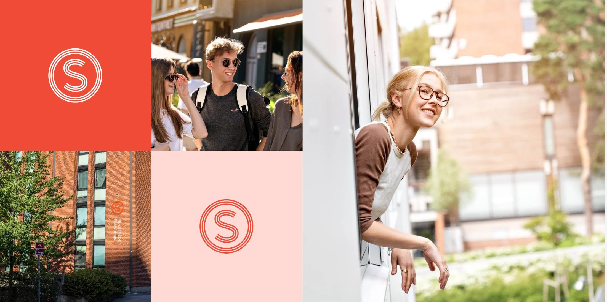
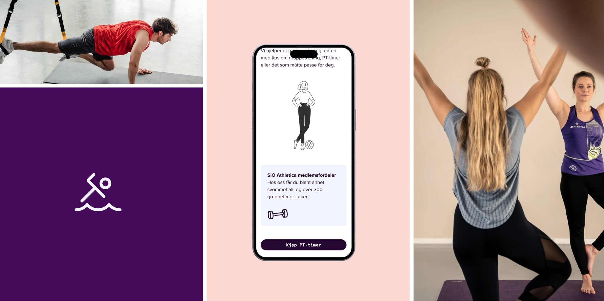
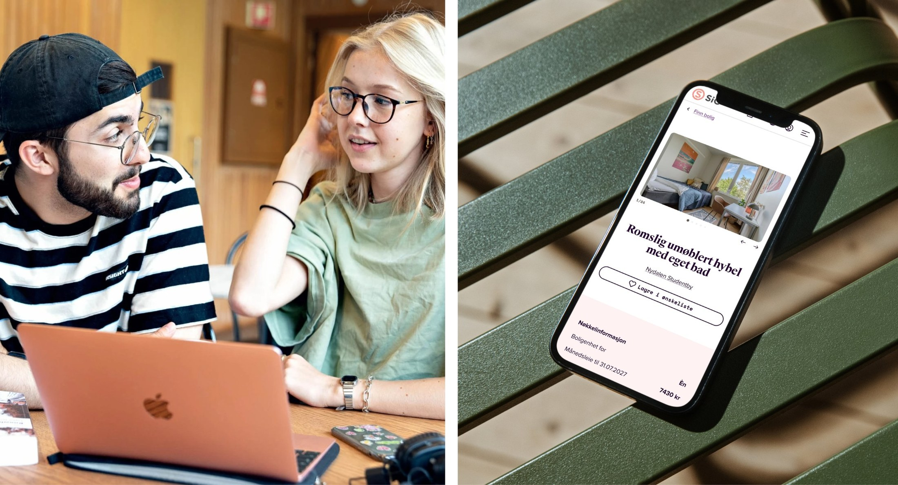
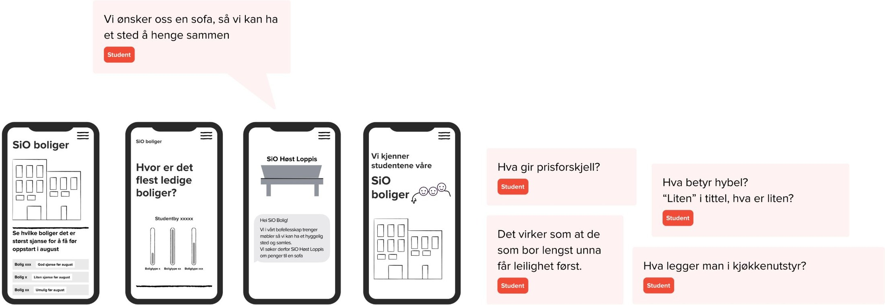
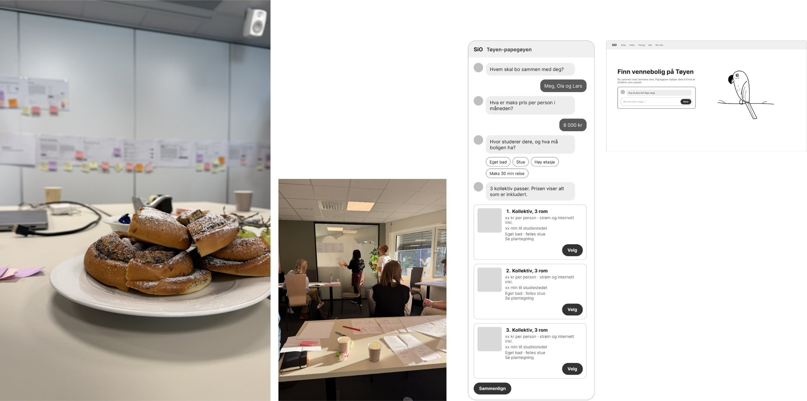

Case 02
SiO – Digitale tjenester for studentene i Oslo
Siden januar 2025 har jeg hatt flere oppdrag for Studentsamskipnaden i Oslo (SiO). Jeg har jobbet i det faste webteamet i smidige utviklingsprosesser, med en felles SaaS-løsning for studentforeninger i hele Norge, og med innsikt og konseptutvikling for SiO Bolig.
- Kunde
- Studentsamskipnaden i Oslo (SiO)
- Min rolle
- Lead produktdesigner (UX/UI)
- Team
- Utviklere, produkteiere, kundeservice, redaktører og kommunikasjonsavdelingen
- Når
- januar 2025 – i dag

Som designlead har jeg jobbet tett med utviklere, produkteiere, kundeservice, redaktører og kommunikasjonsavdelingen. Jeg har fått mennesker fra flere fagområder til å jobbe sammen om felles løsninger, og jeg har sørget for at studentene er med i prosessen.
Trening og foreninger for studentene
I webteamet til SiO hadde jeg designansvaret for flere av de digitale tjenestene til studentene. Jeg gjorde innsikt innenfor ulike fagområder og gjorde funnene om til konkrete løsninger. For treningstilbudet laget jeg konseptuelle trådskisser basert på gamifiseringsmekanikker, for å gjøre det mer motiverende å trene. Jeg tok også initiativ til et tettere samarbeid mellom utvikling, kommunikasjonsavdelingen og de andre designerne i SiO.

SiO ville lage et felles produkt for flere studentforeninger i Norge. Jeg designet en ny skybasert SaaS-løsning med felles kodebase. Den har både innloggede og åpne sider, med publisering av innhold, foreningssider og arrangementer.
Hver samskipnad har sin egen instans med eget innhold og egen visuell identitet. Det løste vi med design tokens i kode og variabler i Figma, med utgangspunkt i Tailwind-verdier. Komponentbiblioteket jeg laget måtte fungere for flere identiteter og kunne vokse over tid. Første versjon ble designet og utviklet på sju måneder, og løsningen er nå i drift.

Innsikt i hele boligreisen
SiO Bolig har 8 900 boenheter fordelt på 24 studentbyer og -hus i Oslo og Akershus. De ville styrke posisjonen sin i markedet ved å gjøre opplevelsen bedre for studentene gjennom hele boligreisen. Jeg ledet innsiktsarbeidet fra start til slutt, i tett samarbeid med produkteieren.
Arbeidet besto av dybdeintervjuer med ansatte og studenter, brukertesting av søkeskjemaet og støtteinnholdet, en spørreundersøkelse og en konkurrentanalyse. Det endte i en rapport og en tiltaksplan, som nå er grunnlaget for videre utvikling av SiOs tilbud om studentboliger.
«Det var fint å være så mye involvert, så jeg forstår metodikken bedre, der lærte jeg masse. Også forstår jeg også godt at det er mye jeg ikke kan, kanskje spesielt rundt det å tolke svarene kundene gir. Du er veldig dyktig og trygg.»

Pågående arbeid (nov. 2026)
Innsikten fra boligarbeidet er utgangspunktet for neste steg. Sammen med en tjenestedesigner og det samme teamet undersøker jeg hvordan bokonseptet «vennebolig» kan brukes i SiOs nye studentboliger på Tøyen. Vi ser særlig på nye måter studentene kan søke og booke bolig på.
Konseptet har vi utviklet sammen med kundeservice, redaktører, produkteier og studenter. Nå tester vi en prototype på studenter for å se hvordan de tar imot konseptet, før vi går videre.

Den røde tråden: innsikt som bygger videre
Jeg har ikke sett på oppdragene som separate leveranser. Jeg har brukt erfaringene fra hvert av dem til å gjøre det neste bedre. Innsikten fra boligarbeidet i våres er nå direkte grunnlag for vennebolig-konseptet. Arbeidsformen der jeg trekker inn kundeservice, redaktører og produkteiere tidlig, har jeg tatt med meg fra oppdrag til oppdrag. Resultatet er at SiO får løsninger som henger sammen, og et team som forstår hvorfor løsningene ser ut som de gjør.
Hva jeg har bidratt med
- UX og innsikt
-
- Dybdeintervjuer
- Brukertesting
- Spørreundersøkelser
- Konkurrentanalyse
- Kvalitativ og kvantitativ analyse
- Brukerhistorier
- Konsepter
- Trådskisser
- Prototyper
- Rapport og tiltaksplan
- Forankring hos nøkkelpersoner
- UI og designsystem
-
- UI-design
- Komponentbibliotek og designsystem
- Design tokens og variabler for flere identiteter
- Illustrasjon
- Universell utforming
- Prosess
-
- Designmetodikk
- Smidig utvikling
- Samarbeid på tvers av fag
- Verktøy
-
- Figma
- Miro
- Tailwind
- Azure DevOps
- Sanity
- Google Analytics
- Optimizely
- ChatGPT
- Claude
- Teams